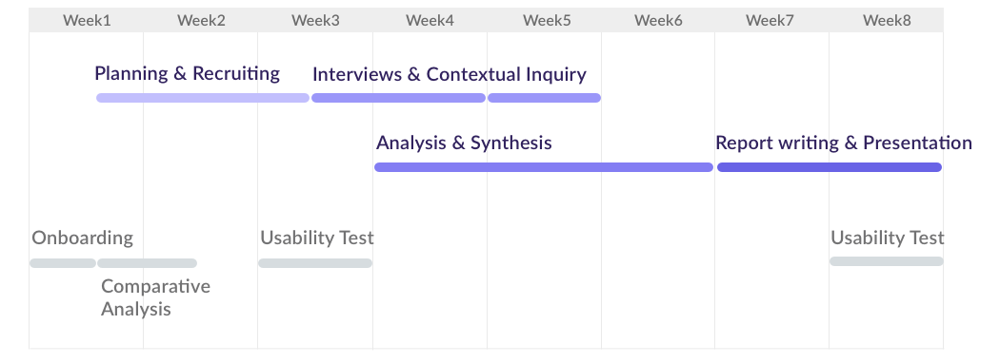
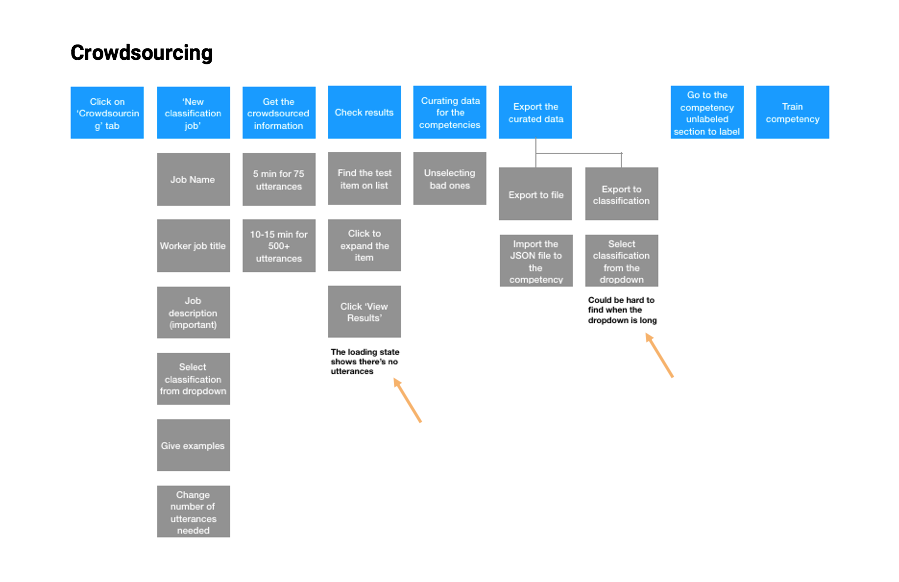
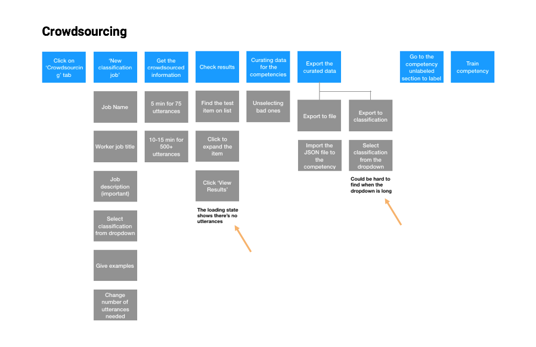
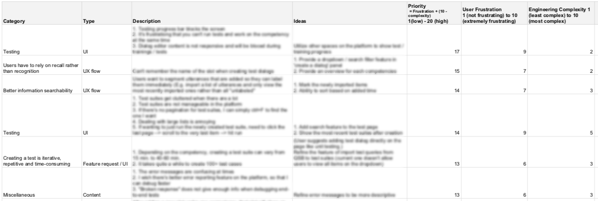

Clinc AI developer platform user research.
As a UX research intern at Clinc platform team, I led an exploratory research project to established a common understanding of the platform's user personas and user experience, and a shared language among the development teams. The results of this research proejct have served to impact the team's innovative roadmap for 2020.
Internship details
8 weeks
Oct - Dec 2019
2 days/week
Teammate
Sean Stapleton
(PM/Engineering Intern)
Methodologies
In-Depth Interview
Expert Interview
Affinity Diagramming
Task Analysis
Main delivereables
Exploratory research report
A set of user personas
Workflow diagrams
Prioritized usability issues and design ecommendations
BACKGROUND
What is Clinc and its conversational AI platform?
Clinc, Inc. is an Ann Arbor-based startup that develops conversational AI solutions for enterprises. Aside from its core AI technologies, the company also offers a development platform for users to build and deploy conversational AI models without writing any code.
The platform's comprehensive features allows users to build a complete conversational AI model from scratch, from scoping the project, defining competencies and transitions, crowdsourcing and curating conversational data, to putting the model to test.
A screenshot of the Clinc conversational AI platform.
PROBLEMS
Challenges of the platform
The platform team has been facing several challenges as the product scales.
1. Transition to a customer-build business model
As the platform becomes more powerful, the company hopes to generate more business by allowing customers to build their own AI. In the long run, the platform needs to be more user-friendly for even the non-technical users.
2. Lack of common understanding of the users and their workflow
The existing personas of the platform were outdated and had not been fully utilized by the development teams. Surprising use cases and workflows were often reported.
3. Prioritize feature requirements for upcoming developemnt roadmap
Growing rapidly, the decision makers wanted a high-level understanding of the platform status and user pain points, to make data-informed decisions on the 2020 development roadmap.
CONSTRAINTS
Indentified challenges of the research project
I have also identified a few challenges that influenced my research plan formulation:
1. Time contraint
I only have aproximately 60 hours available for my research project. The platform team is looking forward to the results earlier than later to better plan for their 2020 development roadmap.
2. Interviewee recruitment
Due to multiple concerns, enterprise customers are harder to recruit. The platform team did not yet have a substantial pool of sponsor users. Since novice customer engineers from the customer side is aimed to be the focus as the product pivots, I have resorted to collect second-hand data from the customer success team to conduct preliminary research of this user group..
3. Quant data unavailable
Quantitative data of the p;atform usage is not easily accessible to quickly conduct user analysis and understand common user workflow. Therefore, the research would rely solely on a qualitative approach with precautions of biased results.
RESEARCH
Data collection

Timeline of the part-time internship. Aside from the exploratory research project, I have also run usability testings and performed a comparative analysis to help refine the user experience and product strategy of the plaform.
1. Stakeholder interviews
In my onboarding weeks, I held one-on-one interviews with the CPO, the head of the platform team, as well as a staff software engineer, in order to answer the following questions:
- Who are the stakeholders for the developer platform?
- What are they working on and what are their goals?
- How might the UX research be of value to them?
During the interviews, I ensured our goals were aligned, identified each stakeholder's needs, explained my methodologies, and asked for available resources. The interviews allowed me to make more solid plans of research studies that would benefit the platform team.
2. User interviews and contuxtual inquiries
I conducted 6 user interviews with AI developers from a partner company, as well as a contextual inquiry with potential client during a product introduction workshop.
Research questions:
- What are the major archetypes of Clinc platform users?
- How do different types of users use the platform? Do they have different workflows?
- What are the user frustrations and pain points? How might we address them?
Interviewees: 6 developerss from a partner company and 1 potential client.
Duration: 1 hour for interviews; 3 hours for contextual inquiry.
Combined with 4 other interviews conducted by a product intern, we collected valuable data about different types of users.
3. Expert interview
To bridge the gap of the little understanding of AI developers from our major customers, I interviewed an engineer from the customer success team. With his daily responsibilities emcompassing solving AI developemnt issues from the customers and providing training sessions for novice platform users, the engineer is an expert on the company's customer landscape and is capable of providing in-depth second-hand information about our enterprise users. The interview was proported to answer the following quesitons:
- What is the landscape of our enterprise customers like?
- What is the typical workflow and team formation of our enterprise users?
- What is the background of the main developers from our enterprise users?
- What are the frustrations and motivations of our enterprise users?
The second-hand data collected from the expert interview has allowed me to delineate one of our growing user group and create a persona for developers to empathize.
SYNTHESIS
Tranlating data into key insights

Located at an alcove right next to the platform team, the affinity wall has high visibility among engineers throughout its evolution.
1. Affinity diagramming
I led the synthesis of collected data by means of affinity diagramming, in collaboration with Sean Stapleton, a product intern from the CoreAI team at Clinc. For a couple of weeks, we adopted a bottom-up approach to cluster approximately 300 affinity notes into high-level insights that are categorized into several meta-clusters:
- Users of different roles collaborate on the same AI version on the platform
- Multiple tools are used in parallel with the platform
- Project description, people, success metrics
- Workflow & usage scenarios
- Project scoping
- Classification & slot-mapping
- Data curation
- Testing
- Issue triaging
- Data insights
- Documentation & training
We also connected related insights, in order to understand the problems more holistically and distill key findings.
2. User personas
In combination with information gathered from stakeholder interviews, I created 5 different personas with the product intern. These personas were introduced in the final presentation and were proported to be utilized as a common language among the engineers at Clinc.
Personas of the platform.
3. Task diagramming
In order to visualize the workflow of different types of users and tasks and discover user pain points taken place during an experience, I created 7 different workflow diagramms based on the users' account during intreviews.
 

Task diagramms of crowsourcing and testing, as well as issues emerged from each expereince.
RESULTS
Key research findings and solution proposals
We summarized key insights generated from the synthesis stage into four major key findings, organized in as well as providing actionable plans to solve the problems.
1. Pre-creation workflows are poorly defined and lead to frustration later in development
“We need to formalize a standard for project scope.”
“It’s difficult to define when something is ready to ship."
The current scoping process is difficult to act on. Developers feel they would greatly benefit from end user utterances. Developers have unclear definitions of success.
Solution proposal
- Establish a standaradized scoping procedure.
- Develop a process for users to validate the progress of AI version
2. Users cannot work efficiently on the platform.
“It’s faster to create a new model than refactor an old one.”
“It’s frustrating not knowing if slot labels are correct."
“Creating a test suite is my least favorite task -- it should have been so simple but it’s so time-consuming."
“Sometimes I crowdsource 200 and only get 10 good ones."
Several usability and technical issues have affected development efficiecy on the platform. The usablity of the current platform version has low information accessibility, such that developers rely on recall rather than recognition in several tasks. Moving data around different features requires a lot of manual work and are prone to human errors. The testing process has been time consuming, with high latency to creat a test and difficulty to locate and update one. In addition, developers are frustrated by they can’t work at the same time and are required to think deeply about overlapping work.
Solution proposal
- Streamline the platform experience by fixing a listed UX issues and redesign recommendations, e.g., adding shortcut, import/export support, and build data management features.
- Consider adding features that help developers collaborate more easily, while removing UI blockers inhibits work efficiency.
3. Information is not always visible for users to make informed decisions.
“I have no good feel for where the model does and doesn’t perform well.”
“Seeing the distribution of slot values is not actionable."
“It’s not fun to just see a bunch of numbers."
Users have reported difficulty in triaging issues when building an AI version. This is reflected in non-actionable analytics data, lack of comparison features for different AI competencies, and the need to manually track word frequencies.
Solution proposal
- Provide an actionable AI health featurethat allows users to see an overview of the AI and take necessary actions.
- Consider adding features to allow users cross-reference different AI competencies.
Aside from presenting the high-level finding summary, we also comprised a list of prioritized issues and recommendations. This will allow the product owner to easily perform actions on the backlog, while easily determining development directions for the future.

A list of 30+ pain points discovered from the interview process were prioritized based on user frustration and engineering complexity.
ACHIEVEMENTS & REFLECTIONS
Involving the whole team throughout my research process
Throughout the eight-week research project, I have re-explored the users of the AI development platform, examined the current status of the platform UX, and provided actionable insights to impact the future of the platform through my research findings.
I have also advocated for a more user-centered approach as the only UX researcher in the team. This was done through proactively sharing my resarch process, showcasing my toolkit and propose new studies, and involving engineers from within and other teams during my studies.
Changes I have observed throughout the process includes spotting engineers reading affinity notes and commenting on them, referring to the affinity wall in product meetings, as well as growing interest in my research progress. To continue fostering the user centered culture, I have proposed a series of UX
If I had more time, I would continue fostering the user-centered culture by holding regular brownbag sessions as well as brainstorming and design workshops, while conducting regular usability testings and share the results across the team.